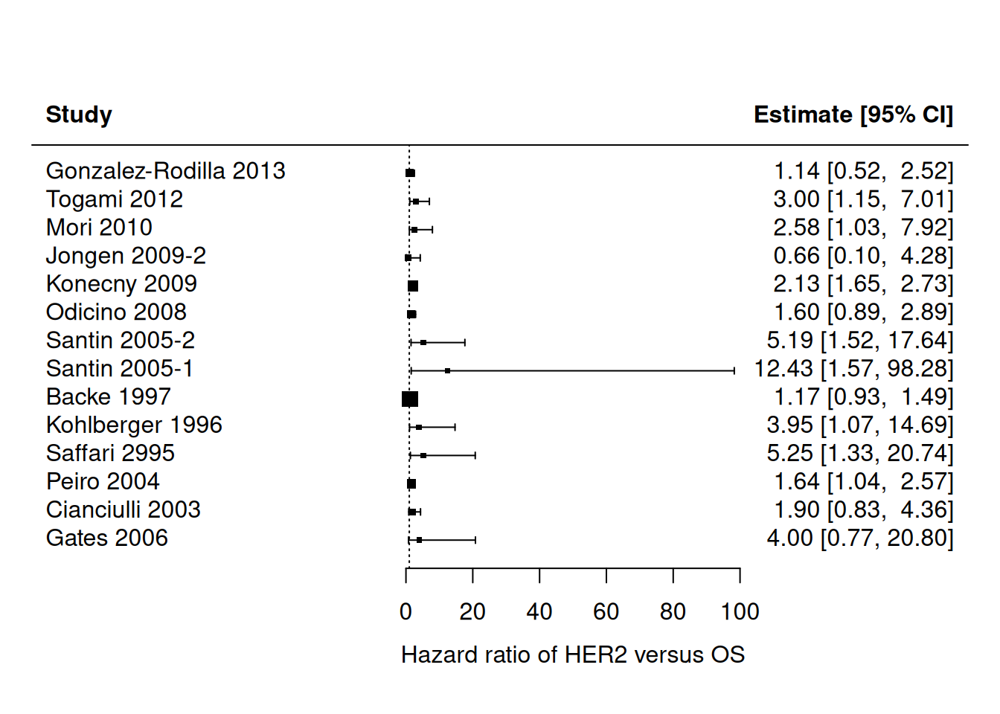

1 Introduction
An important task in medical research is the identification and assessment of prognostic factors. A prognostic factor is any measure that, among people with a given health condition (that is, a startpoint), is associated with a subsequent clinical outcome (an endpoint) (Riley 2013). Commonly investigated prognostic factors include simple measures such as age, sex, and size of tumor, but they can also include more complex factors such as abnormal levels of proteins or catecholamines and unusual genetic mutations (Sauerbrei and Altman 2006). They can be useful as modifiable targets for interventions to improve outcomes, building blocks for prognostic models, or predictors of differential treatment response.
Over the past few decades, numerous prognostic factor studies have been published in the medical literature. For example, Riley and Burchill (2003) identified 260 studies reporting associations for 130 different tumour markers for neuroblastoma. More recently, Tzoulaki and Ioannidis (2009) identified 79 studies reporting the added value of 86 different markers when added to the Framingham risk score. Despite this huge research effort, the prognostic value of most traditional factors under discussion is uncertain and the usefulness of many specific markers, prognostic indices, and classification schemes is still unproven (Sauerbrei and Altman 2006).
The aim of this introduction is to illustrate how to summarize the results from multiple prognostic factor studies and how to investigate sources of between-study heterogeneity.
In this practical we will make use of the R packages metamisc and metafor. The https://cran.r-project.org/package=metafor package provides a comprehensive collection of functions for conducting meta-analyses in R. The https://cran.r-project.org/package=metamisc package provides additional functions to facilitate meta-analysis of prognosis studies. We can load these packages as follows:
2 Meta-analysis of prognostic effect estimates
2.1 Background information
Endometrial cancer (EC) is the fourth most common malignancy in women and the most common gynecologic cancer. Overall, the 5-year survival rates for EC are approximately 78–90% for stage I, 74% for stage II, 36–57% for stage III, and 20% for stage IV. Such poor outcomes raise an urgent requirement that more accurate prognosis and predictive markers should be applied for EC to guide the therapy and monitor the disease progress for individual patients.
Several biological molecules have been proposed as prognostic biomarkers in EC. Among them, hormone receptors such as estrogen receptors (ER), progesterone receptors (PR), and human epidermal growth factor receptor 2 (HER2) are attractive because of their physiological functions. Recently, Zhang conducted a systematic review to evaluate the overall risk of these hormone receptors for endometrial cancer survival (Zhang and Sun 2015). This review included 16 studies recruiting 1764 patients for HER2. We can load the data from all 16 studies in R as follows:
data(Zhang)This creates an object Zhang that contains the summary data from 14 studies reporting on overall survival (OS) and from 6 studies reporting on progression-free survival (PFS). As a result, a total of 20 estimates are available for the hazard ratio of HER2:
Zhang Study PrimaryAuthor year Country Disease N HR
1 Gonzalez-Rodilla 2013 Gonzalez-Rodilla 2013 Spain EC 126 1.14
2 Togami 2012 Togami 2012 Japan UPSC 71 3.00
3 Mori 2010 Mori 2010 Japan EEC 63 2.58
4 Jongen 2009-2 Jongen 2009 Netherlands EEC 315 0.66
5 Konecny 2009 Konecny 2009 USA EC 273 2.13
6 Odicino 2008 Odicino 2008 Italy UPSC 10 1.60
7 Santin 2005-2 Santin 2005 USA UPSC 30 5.19
8 Santin 2005-1 Santin 2005 USA UPSC 27 12.43
9 Backe 1997 Backe 1997 Germany EC 222 1.17
10 Kohlberger 1996 Kohlberger 1996 Australia EC 100 3.95
11 Saffari 2995 Saffari 1995 USA EC 75 5.25
12 Peiro 2004 Peiro 2004 Germany EC 10 1.64
13 Cianciulli 2003 Cianciulli 2003 Italy EC 73 1.90
14 Gates 2006 Gates 2006 USA EC 99 4.00
15 Togami 2012 Togami 2012 Japan UPSC 71 3.43
16 Mori 2010 Mori 2010 Japan EEC 63 3.80
17 Jongen 2009-2 Jongen 2009 Netherlands EEC 315 1.75
18 Coronado 2001 Coronado 2001 Spain EC 114 2.69
19 Backe 1997 Backe 1997 Germany EC 222 1.36
20 Voss 2011 Vos 2011 England EC 156 1.41
HR.025 HR.975 outcome
1 0.52 2.52 OS
2 1.15 7.01 OS
3 1.03 7.92 OS
4 0.10 4.28 OS
5 1.65 2.73 OS
6 0.89 2.89 OS
7 1.52 17.64 OS
8 1.57 98.28 OS
9 0.93 1.49 OS
10 1.07 14.69 OS
11 1.33 20.74 OS
12 1.04 2.57 OS
13 0.83 4.36 OS
14 0.77 20.80 OS
15 1.50 7.23 PFS
16 1.29 12.35 PFS
17 0.23 13.08 PFS
18 1.35 5.37 PFS
19 0.65 2.85 PFS
20 0.51 3.88 PFSFor each study, estimates of effect were retrieved as follows. The simplest method consisted in the direct collection of HR, odds ratio or risk ratio, and their 95% CI from the original article, with an HR of less than 1 being associated with a better outcome. If not available, the total numbers of observed deaths/cancer recurrences and the numbers of patients in each group were extracted to calculate HR. When data were only available as Kaplan-Meier curves, data were extracted from the graphical survival plots, and estimation of the HR was then performed using the described method.
A total of 14 studies assessed the relation between HER2 and overall survival. The corresponding hazard ratios (HR) are given below:
Zhang Study PrimaryAuthor year Country Disease N HR
1 Gonzalez-Rodilla 2013 Gonzalez-Rodilla 2013 Spain EC 126 1.14
2 Togami 2012 Togami 2012 Japan UPSC 71 3.00
3 Mori 2010 Mori 2010 Japan EEC 63 2.58
4 Jongen 2009-2 Jongen 2009 Netherlands EEC 315 0.66
5 Konecny 2009 Konecny 2009 USA EC 273 2.13
6 Odicino 2008 Odicino 2008 Italy UPSC 10 1.60
7 Santin 2005-2 Santin 2005 USA UPSC 30 5.19
8 Santin 2005-1 Santin 2005 USA UPSC 27 12.43
9 Backe 1997 Backe 1997 Germany EC 222 1.17
10 Kohlberger 1996 Kohlberger 1996 Australia EC 100 3.95
11 Saffari 2995 Saffari 1995 USA EC 75 5.25
12 Peiro 2004 Peiro 2004 Germany EC 10 1.64
13 Cianciulli 2003 Cianciulli 2003 Italy EC 73 1.90
14 Gates 2006 Gates 2006 USA EC 99 4.00
15 Togami 2012 Togami 2012 Japan UPSC 71 3.43
16 Mori 2010 Mori 2010 Japan EEC 63 3.80
17 Jongen 2009-2 Jongen 2009 Netherlands EEC 315 1.75
18 Coronado 2001 Coronado 2001 Spain EC 114 2.69
19 Backe 1997 Backe 1997 Germany EC 222 1.36
20 Voss 2011 Vos 2011 England EC 156 1.41
HR.025 HR.975 outcome
1 0.52 2.52 OS
2 1.15 7.01 OS
3 1.03 7.92 OS
4 0.10 4.28 OS
5 1.65 2.73 OS
6 0.89 2.89 OS
7 1.52 17.64 OS
8 1.57 98.28 OS
9 0.93 1.49 OS
10 1.07 14.69 OS
11 1.33 20.74 OS
12 1.04 2.57 OS
13 0.83 4.36 OS
14 0.77 20.80 OS
15 1.50 7.23 PFS
16 1.29 12.35 PFS
17 0.23 13.08 PFS
18 1.35 5.37 PFS
19 0.65 2.85 PFS
20 0.51 3.88 PFSEEC endometrioid endometrial cancer, UPSC uterine papillary serous carcinoma
The hormone receptor HER2 has prognostic value for survival but is prone to substantial between-study heterogeneity. Hazard ratios appear much larger for studies conducted in the USA
The heterogeneity of the population was probably due to the difference in the baseline characteristics of patients (age, tumor stage, race, methodology for assessing HRs expression, or country), the cutoff value of markers, the undergoing treatment, the duration of follow-up, and others. Also, HRs are unadjusted, and therefore highly prone to heterogeneity in patient spectrum.
Note that the total number of studies is indeed 16:
2.2 Exploratory analyses
It is often helpful to display the effect sizes of all studies in a forest plot. The forest plot for overall survival can then be generated as follows. Briefly, we here provide information on the estimated hazard ratios (via the argument theta), as well as the bounds of their 95% confidence interval (via theta.ci.lb and theta.ci.ub). Further, we only include the 14 estimates for overall survival.
We can also generate the same plot using metafor:
metafor::forest(x = Zhang$HR, ci.lb = Zhang$HR.025, ci.ub = Zhang$HR.975, slab =
Zhang$Study, subset = (Zhang$outcome=="OS"), xlab =
"Hazard ratio of HER2 versus OS", refline = 1)
It is easier to assess the summary effect and the presence of statistical heterogeneity.
2.3 Data preparation
To facilitate any further analysis, information on the standard error of the different study effect sizes is needed. Estimates for the standard error can be obtained from the reported 95% confidence intervals (Altman Douglas G. and Bland 2011). However, rather than estimating the standard error of the HR, we will calculate the log HR and estimate its corresponding standard error. The main reason is that the HR is a ratio measure, for which the (within-study) sampling variation can be approximated with a Normal distribution if the log scale is used.
The standard error (SE) of the log hazard ratio is simply given as:
where the upper and lower limits of the 95% CI are and respectively. In R, we have:
Zhang$logHR <- log(Zhang$HR)
Zhang$se.logHR <- (log(Zhang$HR.975)-log(Zhang$HR.025))/(2*qnorm((1-0.05/2)))
head(Zhang) Study PrimaryAuthor year Country Disease N HR
1 Gonzalez-Rodilla 2013 Gonzalez-Rodilla 2013 Spain EC 126 1.14
2 Togami 2012 Togami 2012 Japan UPSC 71 3.00
3 Mori 2010 Mori 2010 Japan EEC 63 2.58
4 Jongen 2009-2 Jongen 2009 Netherlands EEC 315 0.66
5 Konecny 2009 Konecny 2009 USA EC 273 2.13
6 Odicino 2008 Odicino 2008 Italy UPSC 10 1.60
HR.025 HR.975 outcome logHR se.logHR
1 0.52 2.52 OS 0.1310283 0.4026057
2 1.15 7.01 OS 1.0986123 0.4611247
3 1.03 7.92 OS 0.9477894 0.5203750
4 0.10 4.28 OS -0.4155154 0.9583181
5 1.65 2.73 OS 0.7561220 0.1284530
6 0.89 2.89 OS 0.4700036 0.30046222.4 Assessment of publication bias
The presence of small-study effects is a common threat to systematic reviews and meta-analyses. Small-study effects is a generic term for the phenomenon that sometimes smaller studies show different, often stronger, effects than the large ones (Debray and Riley 2018). One possible reason is publication bias. Previously, D. G. Altman (2001) argued that it is probable that studies showing a strong (often statistically significant) prognostic ability are more likely to be published. For this reason, it is important to evaluate the potential presence of small-study effects, which can be verified by visual inspection of the funnel plot. In this plot, the estimate of the reported effect size is plotted against a measure of precision or sample size for each included study of the meta-analysis. The premise is that the scatter of plots should reflect a funnel shape, if small-study effects do not exist (provided that effect sizes are not substantially affected by the presence of between-study heterogeneity). However, when small studies are predominately in one direction (usually the direction of larger effect sizes), asymmetry will ensue.
A common approach to construct the funnel plot is to display the individual observed effect sizes on the x-axis against the corresponding standard errors on the y-axis, and to use the fixed effect summary estimate as reference value. In the absence of publication bias and heterogeneity, one would then expect to see the points forming a funnel shape, with the majority of the points falling inside of the pseudo-confidence region of the summary estimate.
res <- rma(yi = logHR, sei = se.logHR, subset = (outcome=="OS"), method = "FE", data = Zhang)
funnel(res, xlab="Log Hazard Ratio")Most study estimates fall within the pseudo-confidence region, hence there appears limited evidence for publication bias.
We can formally test the presence of asymmetry in the funnel plot by evaluating whether there is an association between the estimated standard error and the estimated effect size.
regtest(x = Zhang$logHR, sei = Zhang$se.logHR, subset = (Zhang$outcome=="OS"),
model = "lm", predictor = "sei")
Regression Test for Funnel Plot Asymmetry
Model: weighted regression with multiplicative dispersion
Predictor: standard error
Test for Funnel Plot Asymmetry: t = 2.1622, df = 12, p = 0.0515
Limit Estimate (as sei -> 0): b = 0.2590 (CI: -0.0760, 0.5939)The P-value for funnel plot asymmetry is given as 0.052. Note that it is common to use a 10% level of significance because the number of studies in a meta-analysis is usually low and also there is evidence for funnel plot asymmetry, as the P-value is below 0.10.
Funnel plot asymmetry tests can also be performed using metamisc
ds <- subset(Zhang, outcome=="OS")
regfit <- with(ds, fat(b=logHR, b.se=se.logHR, method="E-FIV"))
regfitCall: fat(b = logHR, b.se = se.logHR, method = "E-FIV")
Fixed effect summary estimate: 0.5193
test for funnel plot asymmetry: t =2.1622, df = 12, p = 0.0515Again, we can construct a funnel plot:
plot(regfit)
Some caution is warranted when interpreting the results for funnel plot asymmetry tests (Debray and Riley 2018). First, the power to detect asymmetry is often limited because meta-analyses usually do not include many studies. Second, many tests are known to yield inadequate type-I error rates or to suffer from low power. For instance, it has been demonstrated that aforementioned test to evaluate the association between the estimated standard error and effect size tends to yield type-I error rates that are too high. Finally, funnel plot asymmetry may rather be caused by heterogeneity than by publication bias.
Adjust aformentioned regression test to use inverse of the total sample size (rather than the standard error) as predictor.
regtest(x = Zhang$logHR, sei = Zhang$se.logHR, ni = Zhang$N,
subset = (Zhang$outcome=="OS"), model = "lm",
predictor = "ninv")
Regression Test for Funnel Plot Asymmetry
Model: weighted regression with multiplicative dispersion
Predictor: inverse of the sample size
Test for Funnel Plot Asymmetry: t = 0.1552, df = 12, p = 0.8793
Limit Estimate (as ni -> inf): b = 0.5088 (CI: 0.2226, 0.7950)From here onwards, we will assume that the potential for publication bias is neglegible, and proceed with standard meta-analysis methods.
2.5 Meta-analysis of the prognostic value of HER2
Meta-analysis is an option when the identified studies are considered sufficiently robust and comparable, and requires there are at least two estimates of the same statistic across studies. A random effects approach is often essential to allow for unexplained heterogeneity across studies due to differences in their methods, time-scale, populations, cut-points, adjustment factors, and treatments.
A standard random effects meta-analysis combines the study estimates of the statistic of interest (here given as the log HR of HER2) in order to estimate the average effect (denoted by ) and its standard deviation (denoted by ) across studies. If and denote the estimate and its variance in study , then a general random effects meta-analysis model can be specified as:
It is common to first estimate the heterogeneity parameter and to use the resulting value to estimate . However, such approach does not adequately reflect the error associated with parameter estimation, especially when the number of studies is small. For this reason, alternative estimators have been proposed that simultaneously estimate and . Here, we will focus on Restricted Maximum Likelihood Estimation (REML), which is implemented as default in metafor.
resREML <- rma(yi = logHR, sei = se.logHR, subset = (outcome=="OS"),
method = "REML", slab = Study, data = Zhang)
resREML
Random-Effects Model (k = 14; tau^2 estimator: REML)
tau^2 (estimated amount of total heterogeneity): 0.0883 (SE = 0.0854)
tau (square root of estimated tau^2 value): 0.2972
I^2 (total heterogeneity / total variability): 49.17%
H^2 (total variability / sampling variability): 1.97
Test for Heterogeneity:
Q(df = 13) = 28.9214, p-val = 0.0067
Model Results:
estimate se zval pval ci.lb ci.ub
0.6669 0.1354 4.9251 <.0001 0.4015 0.9324 ***
---
Signif. codes: 0 '***' 0.001 '**' 0.01 '*' 0.05 '.' 0.1 ' ' 1
# The following approach yields the same results
# rma(yi=logHR, sei=se.logHR, subset=(outcome=="OS"), data=Zhang)The summary effect size is 0.667 and the between-study standard deviation is 0.297
The standard error of the summary effect size is 0.135 and the standard error of the between-study variance is 0.085
We can calculate the summary HR and the corresponding 95% CI by back-transforming the estimate for and its confidence bounds:
Note that the confidence interval for is usually based on a Student T distribution to account for estimation error in .
The summary HR of HER2 is statistically significant, so the hormone receptor appears to be predictive on average. In particular, an increased level of HER2 was associated with poorer survival, on average.
We can also obtain the summary estimate and 95% CI for the HR of HER2 by simply using the predict function:
predict(resREML, transf = exp)
pred ci.lb ci.ub pi.lb pi.ub
1.9483 1.4941 2.5405 1.0272 3.6954 Although the summary result () is usually the main focus of a meta-analysis, this reflects some average across studies and it may be hard to translate to clinical practice when there is large between-study heterogeneity. We can quantify the impact of between-study heterogeneity by constructing a % prediction interval, which gives the potential true prognostic effect in a new population conditional on the meta-analysis results (Riley and Deeks 2011). An approximate prediction interval (PI) is given as follows:
where is the % percentile of the t-distribution for degrees of freedom, is the number of studies, is the estimated standard error of , and is the estimated between-study standard deviation. In R, can calculate the approximate 95% PI for as follows:
level <- 0.05
crit <- qt(c(level/2, 1-(level/2)), df = (resREML$k-2))
mu <- resREML$b
tau2 <- resREML$tau2
sigma2 <- vcov(resREML)
mu + crit * c(sqrt(tau2 + sigma2))[1] -0.04467483 1.37855606The boundaries of the approximate 95% PI are given as 0.956 to 3.969 .
There is substantial heterogeneity in the prognostic value of HER 2 and its usefulness may be very limited in certain populations.
A possible approach to enhance the interpretation of meta-analysis results is to calculate the probability that the prognostic effect of HER 2 will be above some useful value (e.g. a HR > 1.5 for a binary factor, which indicates risk is increased by at least 50%). We can calculate this probability as follows:
where is approximated using a scaled Student- distribution (similar to the calculation of our prediction interval):
We can also estimate this probability by means of simulation:
# Simulate 100000 new studies
Nsim <- 1000000
HRsim <- exp(mu + rt(Nsim, df=(resREML$k-2))*sqrt(tau2+sigma2))
sum(HRsim>1.5)/Nsim[1] 0.780329The probability is 78% , suggesting that using HER2 will often provide adequate discrimination.
2.6 Multivariate meta-analysis
In previous section, we used 14 of the 16 identified studies to evaluate the prognostic effect of HER2 on overall survival. Two studies were excluded from the meta-analysis because they did not provide direct evidence about overall survival. This is unwelcome, especially if the participants are otherwise representative of the population, clinical settings, and condition of interest (Riley and White 2017). For this reason, we here discuss how multivariate meta-analysis methods can be used to include studies that do not necessarliy provide direct evidence on the outcome of interest. Briefly, multivariate meta-analysis methods simultaneously analyse multiple outcomes, which allows more studies to contribute towards each outcome.
For instance, 6 studies in the review of Zhang and Sun (2015) assessed the relation between HER2 and PFS. The corresponding hazard ratios are given below:
We can therefore combine this evidence with the HRs on overall survival to obtain more accurate estimates for the prognostic value of the hormone receptor HER2 with respect to PFS and OS.
The hormone receptor HER2 also has prognostic value for progression-free survival. Furthermore, the reported HRs appear to be much more homogeneous across studies.
Perform a random-effects meta-analysis and construct a forest plot.
resPFS <- rma(yi = Zhang$logHR, sei = Zhang$se.logHR, subset = (Zhang$outcome=="PFS"),
method = "REML", slab = Zhang$Study)
resPFS
Random-Effects Model (k = 6; tau^2 estimator: REML)
tau^2 (estimated amount of total heterogeneity): 0.0282 (SE = 0.1450)
tau (square root of estimated tau^2 value): 0.1679
I^2 (total heterogeneity / total variability): 11.43%
H^2 (total variability / sampling variability): 1.13
Test for Heterogeneity:
Q(df = 5) = 4.8450, p-val = 0.4351
Model Results:
estimate se zval pval ci.lb ci.ub
0.8147 0.2008 4.0565 <.0001 0.4211 1.2083 ***
---
Signif. codes: 0 '***' 0.001 '**' 0.01 '*' 0.05 '.' 0.1 ' ' 1
metafor::forest(resPFS, transf = exp, xlab = "Hazard Ratio", refline = 1)Note that the univariate meta-analysis for PFS is based on merely 6 studies, and that the univariate meta-analysis for OS was based on 14 studies. We can now employ multivariate meta-analysis to ‘’borrow information’’ from the 4 studies that report prognostic effects for both PFS and OS (Togami 2012, Mori 2010, Jongen 2009-2 and Backe 1997). This, in turn, allows all studies to contribute on the summary effect for HER2 in both outcomes.
Before we can proceed with the model fitting, we need to construct the full (block-diagonal) variance-covariance for all studies from the two outcomes. We can do this using the diag() function in one line of code:
V <- diag(Zhang$se.logHR**2)A multivariate random-effects model can now be used to meta-analyze the two outcomes simultaneously.
res.MV <- rma.mv(yi = logHR, V, mods = ~ outcome - 1, random = ~ outcome | Study,
struct = "UN", data = Zhang, method = "REML")
res.MV
Multivariate Meta-Analysis Model (k = 20; method: REML)
Variance Components:
outer factor: Study (nlvls = 16)
inner factor: outcome (nlvls = 2)
estim sqrt k.lvl fixed level
tau^2.1 0.0865 0.2942 14 no OS
tau^2.2 0.0770 0.2775 6 no PFS
rho.OS rho.PFS OS PFS
OS 1 - 4
PFS 1.0000 1 no -
Test for Residual Heterogeneity:
QE(df = 18) = 33.7664, p-val = 0.0135
Test of Moderators (coefficients 1:2):
QM(df = 2) = 35.6315, p-val < .0001
Model Results:
estimate se zval pval ci.lb ci.ub
outcomeOS 0.6704 0.1318 5.0868 <.0001 0.4121 0.9287 ***
outcomePFS 0.8734 0.2151 4.0606 <.0001 0.4518 1.2950 ***
---
Signif. codes: 0 '***' 0.001 '**' 0.01 '*' 0.05 '.' 0.1 ' ' 1The new summary estimate is 0.670 (versus 0.667 ) with an SE of 0.132 (versus 0.135 ). Hence, we have gained some precision.
The new summary estimate is 0.873 (versus 0.815 ) with an SE of 0.215 (versus 0.201 ). We have lost precision, possibly because the presence of between-study heterogeneity is now more apparent, thereby complicating estimation of the summary effect.
Note that estimation of between-study heterogeneity was difficult for progression-free survival due to the limited number of studies. In particular, we found = 0.028 with an SE of 0.145. In the multivariate meta-analysis, the estimated between-study variance for PFS was much larger (=0.077), and based on all 16 rather than merely 6 studies.
In summary, the multivariate meta-analysis approach is often helpful as it reduces the need to exclude relevant studies from a meta-analysis, thereby decreasing the risk of bias (e.g. due to selective outcome reporting) and potentially improving precision. As indicated by Riley and White (2017), a multivariate meta-analysis of multiple outcomes is most beneficial when the outcomes are highly correlated and the percentage of studies with missing outcomes is large.